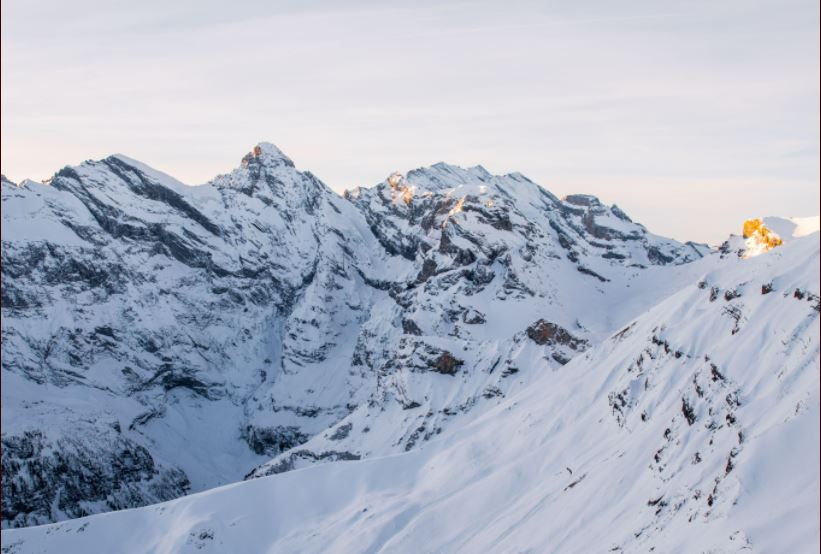

Chronoshift Expeditions is a time traveling experience in the form of safaris. It is designed to give customers the severest thrills real hunters could ever want.


Altogether, the Sahara has 70 species of mammals, 90 species of resident birds, 100 species of reptiles, and numerous species of arthropods. The wildlife is primarily concentrated along the less severe northern and southern margins and near water sources.

The Hoh Rainforest is located on the Olympic Peninsula in western Washington. Many native fauna live in the Hoh Rainforest, including the Pacific tree frog, northern spotted owl, bobcat, cougar, raccoon, Olympic black bear and many others.

In the Western Himalayas, animals have more affinities with that of the Mediterranean, Ethiopian, and Turkmenian regions. The animal life at elevations above the tree line consists of almost exclusively cold-tolerant endemic species that evolved from the wildlife of the steppes after the uplift of the Himalayas.
Expeditions
.jpg)
Brown Bear
Brown and grizzly bears are classified as the same species even though there are notable differences between them. Kodiak bears (brown bears from the Kodiak Archipelago) are classified as a distinct subspecies from those on the mainland because they have been isolated from other bears since the last ice age about 12,000 years ago.

Clydesdale Horse
The Clydesdale horse, a heavy draft-horse breed that originated in Lanarkshire, Scotland, near the River Clyde. This breed is characterized by long hair on the legs,attractive heads, and well-formed legs and feet.
.jpg)
African Lions
African lions used to be spread across most of Africa, but now are only found in sub-Saharan Africa, with 80% in eastern or southern Africa. Three of the five largest populations are in Tanzania.